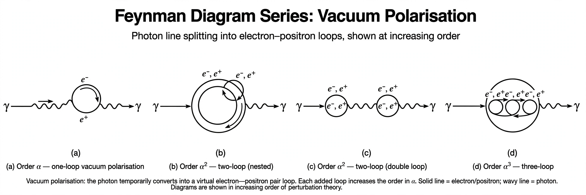

Renormalization

[Image: Diagrammatic series of corrections to an electron's charge by virtual electron–positron pairs (vacuum polarisation)]Renormalization is a collection of techniques in Quantum field theory used to treat infinities arising in calculated quantities by altering values of these quantities to compensate for effects of their self-interactions. Introduced to resolve the difficulties of Quantum electrodynamics in the 1940s, it was reshaped in the 1970s by Kenneth G. Wilson's renormalisation group into a general framework for understanding how physical theories behave at different scales.
A theory in which all infinities can be absorbed into a finite set of parameters is called renormalizable; the Standard Model is such a theory (in its gauge sector), while gravity is famously not renormalizable in the perturbative sense. The modern view regards even renormalizable theories as effective field theories valid up to some energy scale.
The problem and the fix
Loop diagrams in perturbation theory involve integrals over arbitrarily high virtual momenta, which typically diverge. In renormalisation one separates each 'bare' parameter appearing in the Lagrangian (charge, mass) into a measured, physical value plus a counterterm; order by order, the counterterms cancel the divergences, leaving finite, predictive expressions. The physical picture is that interactions dress the bare quantities — for example, virtual electron–positron pairs in the vacuum screen a charge, so the observed charge depends on the distance (energy) at which it is probed.
Renormalisation group
How parameters 'run' with scale is governed by the renormalisation group equations and their beta functions. In Quantum chromodynamics the coupling decreases at high energy (asymptotic freedom, discovered 1973), while in QED it grows slowly. Wilson showed that the same machinery explains critical phenomena and universality in statistical physics: near a phase transition, systems with very different microscopics share identical behaviour. Richard Feynman and Paul Dirac long remained uneasy with renormalisation's sleight of hand, but its modern formulation as effective field theory has made it conceptually respectable and ubiquitous.